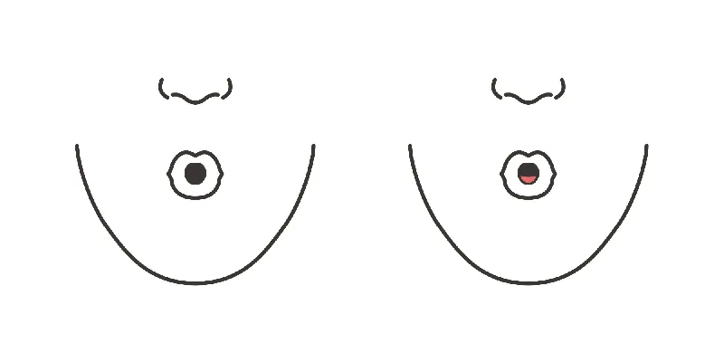
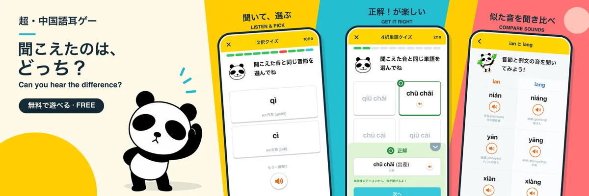

声の上げ下げをつかむ
「えー！まじで？」
から、はじめよう。
四声の感覚を、日本語のイントネーションから体験。いつもの言葉なら、声に出しやすい。
日本語のイントネーションを使った導入です。中国語の四声は、このあとお手本で練習します。
♪「超・中国語耳ゲー」から生まれた発音ブック
聞いて、まねして、会話で使う。
中国語の発音のコツを、
耳と口でつかむ3日間。
本の最初のレッスンを、このページで体験できます。


01 まずは、耳で。
同じ「マイ」でも、声の上げ下げで
意味が変わる。まずは、1問どうぞ。
聞こえた音を選んでください。
正解は「卖 mài＝売る」。
声をすっと下げる音です。2つを聞いて、まねしてみましょう。
音が出ます。音量を調整してお楽しみください。
こんなところで、つまずいていませんか。
02 次は、口でも。
身近な音でつかんで、口の形で確かめる。
本の中の、ちょっと楽しい練習をご紹介。
四声の感覚を、日本語のイントネーションから体験。いつもの言葉なら、声に出しやすい。
日本語のイントネーションを使った導入です。中国語の四声は、このあとお手本で練習します。
中国語の「ü」は、舌と唇の組み合わせがコツ。イラストを見ながら、動かしてみましょう。

本では、口の形・舌の位置・息の出し方から練習します。
タップすると、第4声のお手本を1音ずつ再生。
03 そして、会話へ。
お手本を聞いたら、A役になって話してみる。
練習した音を、短い会話で使います。
你好！ こんにちは。
你好！欢迎！ ようこそ。
谢谢你！ ありがとう。
不客气。 どういたしまして。
再见！ さようなら。
再见！ さようなら。
「A役で話す」は、Aの声が入っていない音声です。空いたところでセリフを言ってみましょう。
本の中には、この続きが。
1日目は約60分、2・3日目は各約90分。
音を聞き、声に出しながら進めます。
日本語で四声を体験。口の準備運動から、母音・子音、ピンインのルールへ。
約60分まず押さえたい6つの音を特訓。似た音を聞き比べ、2択クイズ48問に挑戦。
約90分10本の会話スキットでA役に。自己紹介や気持ちを伝えるひとこと、早口言葉まで。
約90分口の形の図解、練習する音の地図。
迷ったときに戻れるページも揃っています。
Kindle端末（Paperwhiteなど）で読むときは、各節のQRコードをスマホで読み取ってください。ブラウザで再生でき、登録は不要です。
音声ページ一覧を開く始める前に
日本語を使った四声の体験や、口の準備運動から始まります。Day 1では音のしくみとピンインのルールを扱います。文法・語彙を広く学ぶ本ではなく、発音の練習に重点を置いた本です。
本と付属の音声で練習できます。アプリは、聞き分けの練習をさらに繰り返したいときに使えます。
目安はDay 1が約60分、Day 2・3が各約90分です。声に出す練習もあるので、自宅など発声できる場所で取り組んでください。日数はレッスンの構成を示すもので、習得までの時間には個人差があります。
スマホ・タブレットのKindleアプリでは、本文の♪番号をタップするとブラウザの音声ページに移動します。Kindle端末では各節のQRコードをスマホで読み取ってください。会話スキットには通常・ゆっくり・A役無音の音声があります。
スマホやタブレットのKindleアプリで読むことを想定した案内も用意しています。専用端末で読む場合も、付属音声はスマホのブラウザで再生できます。
次の「通じた！」を、この一冊から。
『中国語、通じた！』
耳と口でつかむ発音のコツ
藤崎 裕子 著 ｜ 音声付き Kindle版
AmazonでKindle版を見る本でつかんだコツを、毎日の練習に。

もっと耳を鍛えるなら。
本と同じネイティブの声で、似た音を聞き分ける練習を。短いクイズで、スキマ時間にも耳を鍛えられます。
累計 59万 ダウンロード
無料・広告あり会話のフレーズを増やすなら。
本の「フレーズ集100」の続きに。日常・旅行・仕事など、場面に合うひとことを、会話例とネイティブ音声で確かめられます。
価格・対応端末は各ストアでご確認ください。